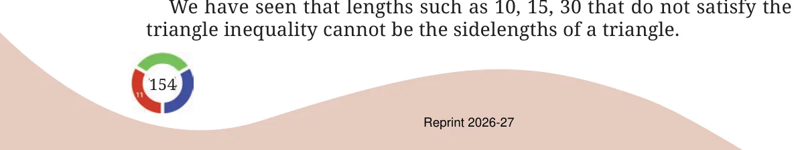
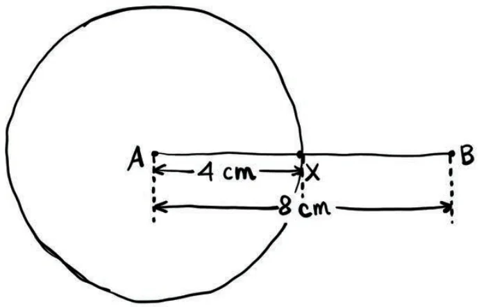
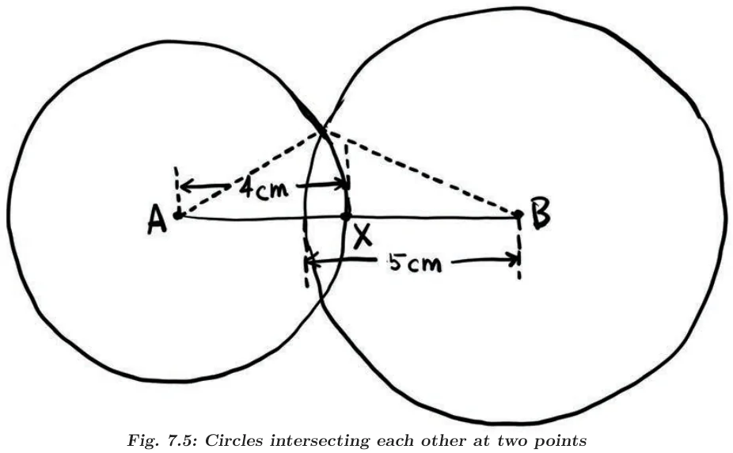

- We checked by construction that there are no triangles having sidelengths 3 cm, 4 cm and 8 cm; and 2 cm, 3 cm and 6 cm. Check if you could have found this without trying to construct the triangle.
- Can we say anything about the existence of a triangle for each of the following sets of lengths?
- 10 km, 10 km and 25 km
- 5 mm, 10 mm and 20 mm
- 12 cm, 20 cm and 40 cm
You would have realised that using a rough figure and comparing the direct path lengths with their corresponding roundabout path lengths is the same as comparing each length with the sum of the other two lengths. There are three such comparisons to be made.
- For each set of lengths seen so far, you might have noticed that in at least two of the comparisons, the direct length was less than the sum of the other two (if not, check again!). For example, for the set of lengths 10 cm, 15 cm and 30 cm, there are two comparisons where this happens:
\(10 < 15 + 30\)
\(15 < 10 + 30\)
But this doesn’t happen for the third length: \(30 > 10 + 15\).
Will this always happen? That is, for any set of lengths, will there be at least two comparisons where the direct length is less than the sum of the other two? Explore for different sets of lengths.
Further, for a given set of lengths, is it possible to identify which lengths will immediately be less than the sum of the other two, without calculations?
[Hint: Consider the direct lengths in the increasing order.]
Given three sidelengths, what do we need to compare to check for the existence of a triangle?
When each length is smaller than the sum of the other two, we say that the lengths satisfy the triangle inequality. For example, the set 3, 4, 5 satisfies the triangle inequality whereas, the set 10, 15, 30 does not satisfy the triangle inequality.
We have seen that lengths such as 10, 15, 30 that do not satisfy the triangle inequality cannot be the sidelengths of a triangle.

Does a triangle exist with sidelengths 4 cm, 5 cm and 8 cm?
This satisfies the triangle inequality:
\(8 < 4 + 5 = 9\)
Why do we not need to check the other two sides?
This means that all the direct path lengths are less than the roundabout path lengths. Does this confirm the existence of a triangle?
If one of the direct path lengths had been longer, we could have concluded that a triangle would surely not exist. But in this case, we can only say that a triangle may or may not exist.
For the triangle to exist, the arcs that we construct to get the third vertex must intersect. Is it possible to determine that this will happen without actually carrying out the construction?
Visualising the construction of circles
Let us imagine that we start the construction by constructing the longest side as the base. Let AB be the base of length 8 cm. The next step is the construction of sufficiently long arcs corresponding to the other two lengths: 4 cm and 5 cm.
Instead of just constructing the arcs, let us complete the full circles. Suppose, we construct a circle of radius 4 cm with A as the centre.

Now, suppose that a circle of radius 5 cm is constructed, centred at B. Can you draw a rough diagram of the resulting figure?
Note that in the figure below, \(AX = 4\text{ cm}\) and \(AB = 8\text{ cm}\). So, what is BX? Does this length help in visualising the resulting figure?
Since \(BX = 4\text{ cm}\), and the radius of the circle centred at B is 5 cm, it is clear that the circles will intersect each other at two points.

What does this tell us about the existence of a triangle? The points A and B along with either of the points of intersection of the circles will give us the required triangle. Thus, there exists a triangle having sidelengths 4 cm, 5 cm and 8 cm.